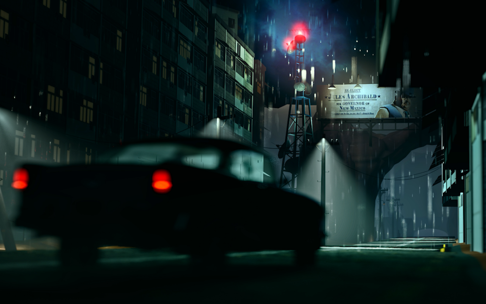
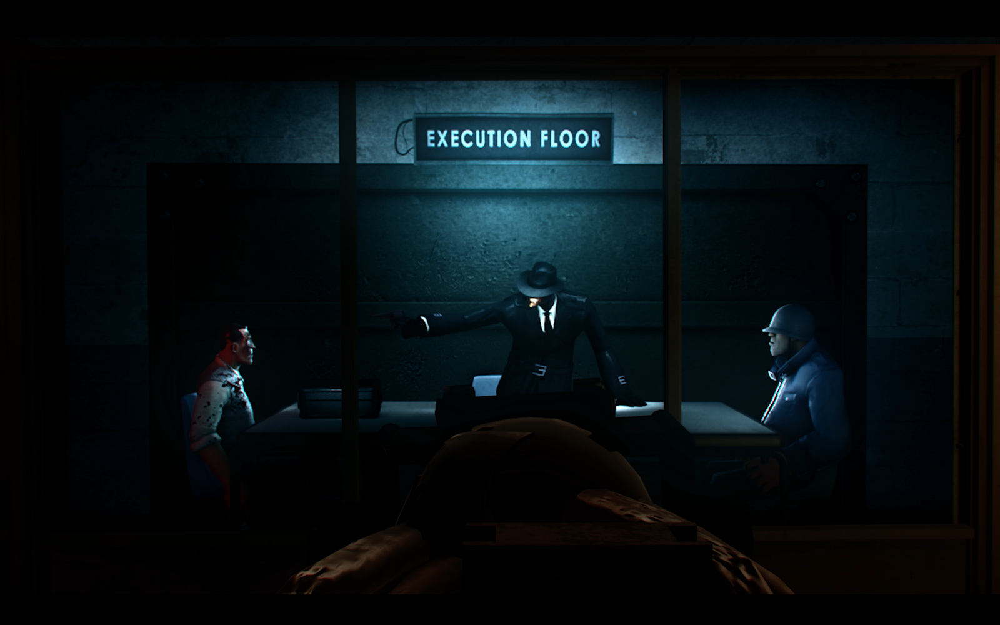
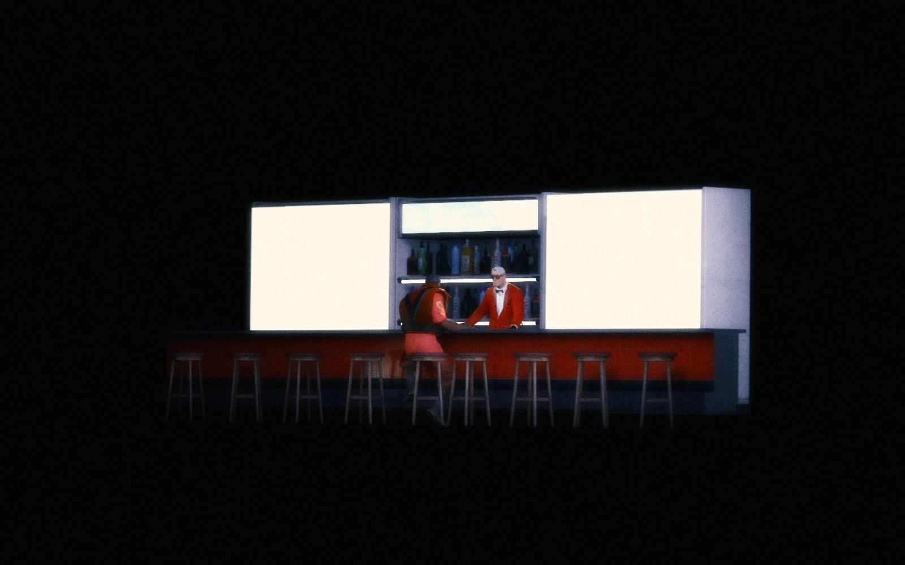
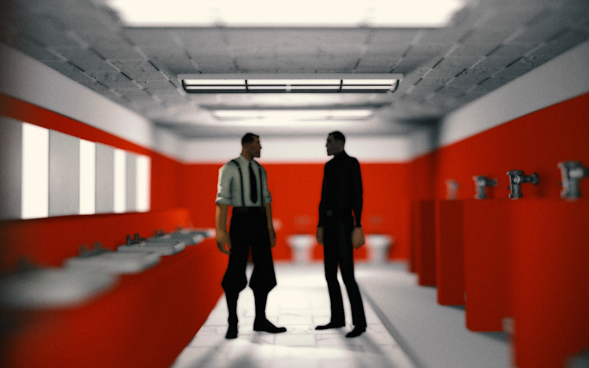
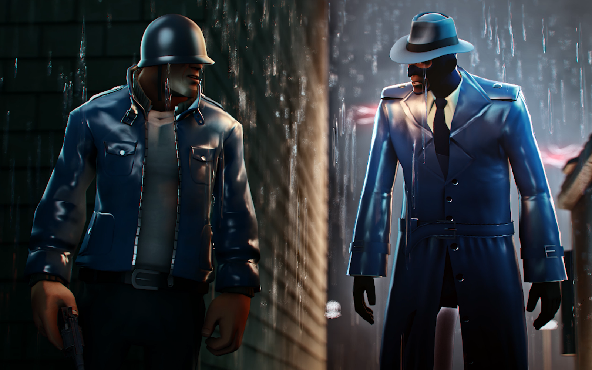
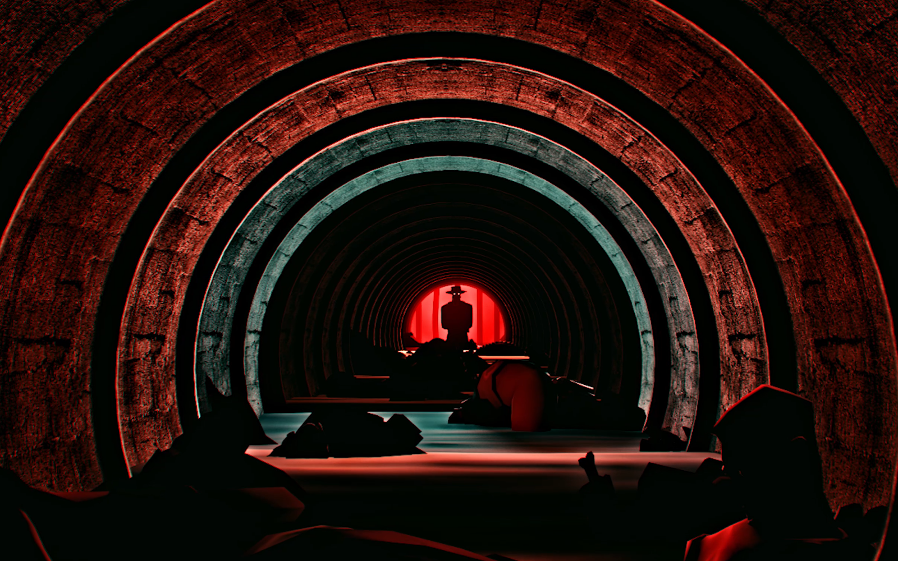

SCREENSHOTS & ART
High quality screenshots and concept art from the film and creators. My personal favorite is the first, the composition and colors appeal to me. The second though, features my favorite chartacter as it's centerpiece. It's a close tie.

The radio tower really sticks out to me. Love the billboard in the distance too.

Favorite scene in the film. Loveeeee this guy. He's very hateable.

Chilling scene. Sad in the grand scheme of things.

Yet another shining, reference, like the bar. Don't think this specific shot made it into the film though.

Funniest characters in my humble opinion. Their relationship is also very complicated.

The more abstract/dream-like sequences in this movie are the coolest.